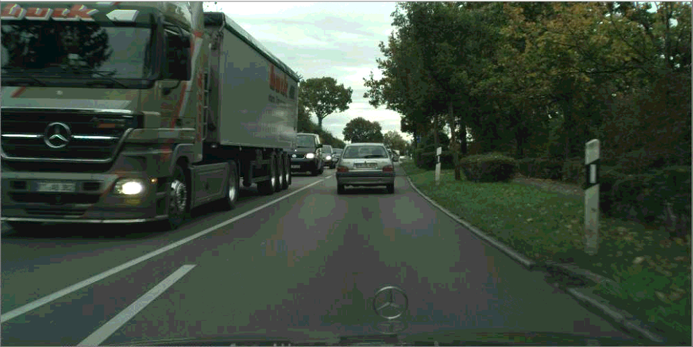
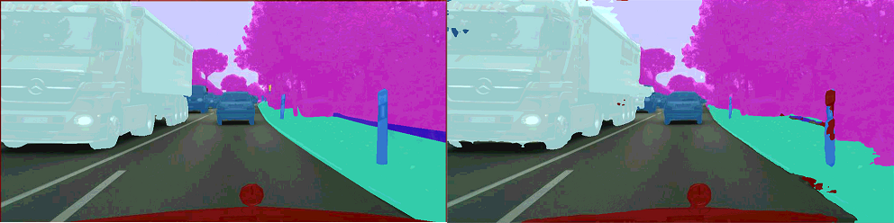

Réunion FoX 02/12/2020
Sami BARCHID
# Tour de table
- Bibliographie
- Projet publication du stage
But de la thèse
SNN pour de la compréhension bio-inspirée de scène nécessaire à la navigation
robotique.
Résumé bibliographie
- Supervised SNN
- Unsupervised SNN (STDP)
- Modèles de vision biologiques
- Neurosciences computationnelles
- Event-based datasets
### Enjeux pour le simulateur
- Images naturelles haute-résolution
- Tâches de vision "complexes" (segmentation, détection, ...)
- Spatio-temporel = traitement vidéos
### Solutions existantes
- Basé sur GPU
- [BindsNET](https://github.com/BindsNET/bindsnet)
- [SpykeTorch](https://github.com/miladmozafari/SpykeTorch)
- [Plein d'autres...](https://github.com/fzenke/spytorch)
- Limitations
- Besoin mémoire pour le traitement d'une vidéo
- Moins proche des hardwares neuromorphiques
- Implémentations peuvent être spécifiques
### Simulateur perso
- Traitement vidéo
- Implémentation spécifique à mon cas d'utilisation
# Projet publication du stage
### Histoire
- Faibles résultats sur datasets indoor traditionnels (NYU-D v2)
- Très bons résultats sur SceneNet RGB-D
- Voir sur gros datasets outdoor (CityScapes)
Résultats visuels sur le validation set

Ground truth - Prediction

### Publication
- Rédaction en chantier
- Établir un plan expérimental
- Autres datasets
- Variation des paramètres du modèle
- Étude d'ablation
- Comparaison état de l'art